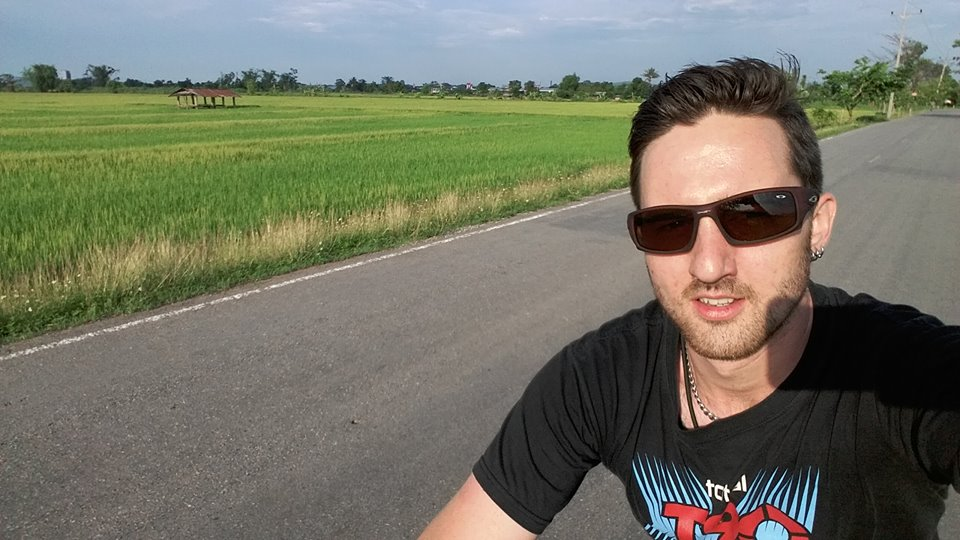

International Primary School Teacher
Budding Web Developer
I am an international primary school teacher and budding web developer from London, UK. I live in Chiang Mai, Thailand, with my wife and three sons. I grew up in London then moved to Brighton for university before leaving the UK in 2011. In my early career, I worked in food services, taking various roles including waiter, bartender, and kitchen assistant. However, my favourite of these early jobs was working as a security guard at London's O2 Arena.
After graduating from university, I spent two years backpacking and working around South-East Asia and Australia. During this time, I worked as grill chef in a gourmet burger restaurant in Brisbane, and as receptionist at backpacker hostels in Brisbane and Katoomba. I then spent three months backpacking in the United States before finally settling in Thailand in April 2013. I lived in a small market town in rural Chiang Rai for 3.5 years, which was possibly the most amazing place I have ever lived in my life. I was surrounded by beautiful rice fields and forest-covered mountains, and cycled every day. After the birth of my first son, I moved to the city of Chiang Rai and then to Chiang Mai in December 2018.
I have been a teacher for 8.5 years, and during this time have studied a Postgraduate Certificate in Education (international), a Master of Arts in Education, and have completed several professional development courses. I have gained valuable experience teaching in face to face, online, and blended learning environments, and multiple educational settings. I have extensive experience in curriculum development, working with the Cambridge International Primary Curriculum and the National Curricula of the UK, Thailand, and Singapore.
My current contract ends in June 2022 and I am exploring my options for the following academic year.